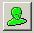

Mechanical Engineering →FAB laboratory →List Of Experiments
3D Machining
Procedure
The procedure describes the step by step process of how to assign various cutting parameter viz. type of cutter, speed, feed, stepover distance, plunge rate etc. in the Modela Player 4 Software, which will finally generate toolpath file for actual machining.
Step 1:
In Modela Player 4 Software import a 3d model in formats (IGES, DXF(3D),or STL) and open it from File-Open Menu.

Model open on screen as shown in fig-1
Select 'Modeling Wax' Material from menu at top right click on 'Model' icon
The model window will appear as shown in fig-2
The model size will display in the window and set the top surface. (Top surface of model is the surface where tool
will approch for cutting)
Step-2
Click on 'Modeling Form' icon the modeling form window will open as shown in fig-3
Margin = Automatic
Depth = Move red line to just below bottom of Design
Slope = Click on Checkbox of make sloped, Top =10%
Cutting Area = This will display total Cutting area Which includes model size, Margin & Slope
Click 'OK'
Step-3
Click on 'New Process' Icon the window will open as shownin Fig-4 Select Roughing 
the window will open as shown in fig -4 Select Roughing
Click on 'Next' and set cutting surface = top, drill R= 1.5 mm ball and cutting area =Partial
Set the cutting area by dragging the red box to the required size as shown in fig-5
Set the start height=0 & end height: Drag the red line to the required cutting depth (-9 mm in current Model)
Tip : End height decides the depth up to which tool will cut the material
The click on "Next " select tool path type =Contour lines, Down cut and set cutting parameter =Default.
Click on create tool path "Right Now" the click on OK.
The roughing toolpath will generate as shown in fig-6
Step-4
Click on 'New Process' icon again select finishing
Cutting surface = top
Choose the tool R = 1mm ball,
Cutting Area = Partial & cutting area = Lower Left, Put the value of X & Y as given below
X = Copy from roughing process, Y = Copy from roughing process
For Upper Left, X = Copy from roughing process , Y = Copy from roughing Process
Depth = Start Depth = 0, End Height = Copy from roughing process
Tool path type = Countour lines Click on down cut and select cutting start position on Lower Left Corner
Set Cutting parameter = Default
Create tool Path 'Right Now' and Click on OK. The Finishing tool path will generate as shown in fig-7
Step-5
To simulate the assigned toolpath for cutting and machining time estimation click on preview cutting icon the simulated preview of cutting is fig-8
Step-6
To estimated the cutting time and total tool movement click on 'Simulation' icon on simulation screen and select estimate cutting time the window will appear which display cutting time and total tool movement as shown in Fig-9